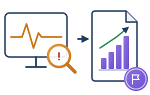

1Definizione
1Definizione 2Pianificazione
2Pianificazione 3Adozione
3Adozione 4Monitoraggio
4Monitoraggio 5Conclusione
5Conclusione
Controllare mentre si usa, poi misurare e rendicontare
D.M. 166/2025, par. 4.1, punto 4
Fase 4 · Monitoraggio
- In parallelo all’adozione: avanzamento gestionale e milestone.
- Controllo costante degli output: «allucinazioni», errori, bias di genere o etnici. Sorveglianza umana (art. 14 AI Act).
- Aggiornamento di rischi e DPIA/FRIA; gestione dei data breach (artt. 33–34 GDPR).
D.M. 166/2025, par. 4.1, punto 5 e par. 5
Fase 5 · Conclusione
- Valutazione dell’impatto didattico e degli obiettivi raggiunti.
- Rendicontazione finale a Collegio dei Docenti e Consiglio d’Istituto (D.Lgs. 297/1994, art. 281).
- Se l’esito è positivo: estensione a tutto l’istituto; aggiornamento di PTOF e Dashboard di Piattaforma Unica.
Esempio: il tutor virtuale alla prova
Durante la sperimentazioneVerifiche a campione sugli output: in un esercizio di geometria il tutor dà una spiegazione imprecisa. Il docente la corregge in aula e segnala l’anomalia al fornitore tramite il canale SLA.
+15%nei punteggi delle verifiche formative della classe pilota
Al termineRelazione finale presentata al Consiglio d’Istituto; piattaforma estesa a tutte le classi seconde e terze dall’anno scolastico successivo; censimento aggiornato su Piattaforma Unica.